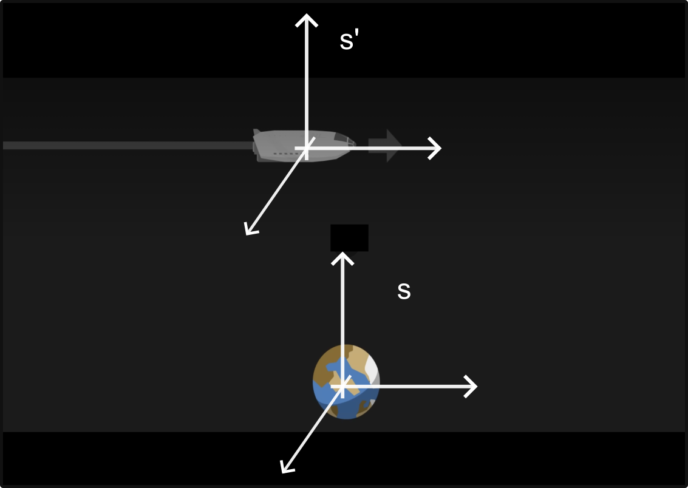
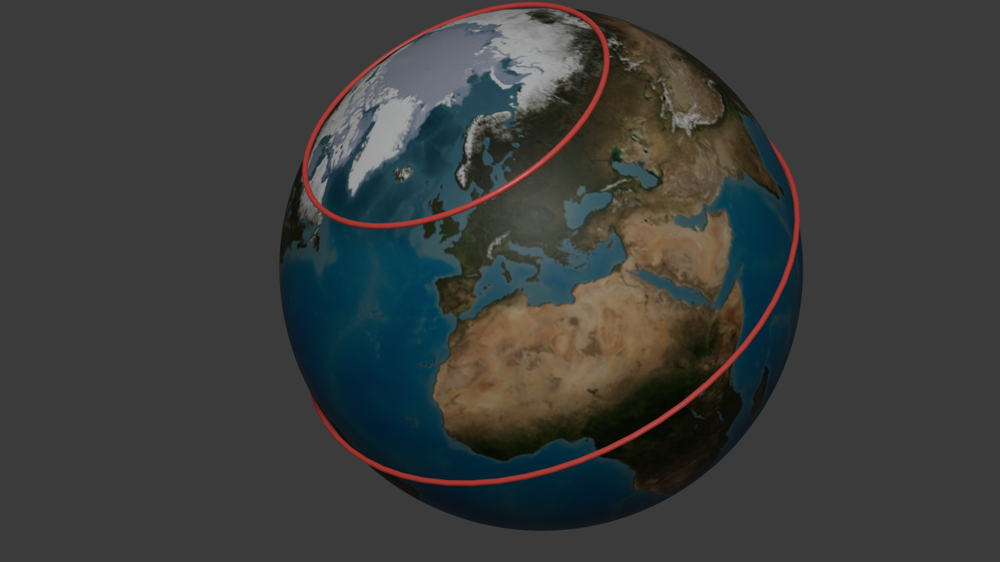

Velkommen til et af de mest fascinerende og kontraintuitive emner i fysikken: Relativitetsteorien. Når vi bevæger os med hverdagshastigheder – som når vi cykler til skole eller kører i bil – virker verden logisk og forudsigelig. Men hvad sker der, når hastighederne nærmer sig lysets fart, eller når vi kigger på universets helt store strukturer? Albert Einstein revolutionerede vores forståelse af tid, rum og bevægelse ved at vise, at fysikkens love afhænger af, hvem der kigger, og hvordan de bevæger sig.
Et initialsystem er et koordinatsystem (eller en referenceramme), hvor Newtons første lov gælder. Det betyder kort fortalt, at hvis en genstand ikke påvirkes af en resulterende kraft, vil den enten ligge stille eller bevæge sig med en konstant hastighed i en retlinet bane.
Definition: Et initialsystem er en referenceramme, der ikke accelererer. Alle referencerammer, der bevæger sig med konstant hastighed i forhold til et initialsystem, er selv initialsystemer.

Forestil dig, at du står i dit fysiklokale og et tog kører forbi, måske kan du se Hovedbanegården fra lokalet. I laver eksperiment med 1.d bevægelse af en bold som I lader falde. I toget er en klasse i gang med præcist det samme forsøg. Toget kører med en hastighed på \(20\frac{\text{km}}{\text{time}}\).
Først eksperimentet i toget, som I kan se gennem vinduerne.
Nu eksperimentet i fysiklokalet som dem på toget også kan se, vinduer igen.
Som I kan se er beskrivelsen helt ens eller helt omvendt hvis I vil. Dette er netop relativitetsprincippet, hvor I ikke kan afgøre hvem der er i bevægelse og hvem der står stille.
Selvom vi føler, at vi sidder stille i fysiklokalet, er vi i konstant og hurtig bevægelse gennem universet. Lad os regne på de hastigheder, vi normalt ignorerer.
Opgave 1: Jordens rotation

Jorden drejer om sin egen akse én gang pr. døgn. Da jorden er en kugle, afhænger din hastighed af din breddegrad. Ved ækvator er hastigheden højest, mens den er nul ved polerne. Omkredsen i cirklen kan beregnes som,\[ d_{omkreds} = 2 \cdot \pi \cdot R_{jord} \cdot \cos(\phi). \]
For København ,ca. \(\phi = 55.67^{\circ}\) nordlig bredde og \(R_{jord} \approx 6371 \text{ km}\).
Hastigheden kan beregnes som længden man har bevæget sig divideret med hvor lang tid det har taget,
\[ v = \frac{d_{omkreds}}{T}, \]
hvor \(T = 24 \text{ timer}\).
Opgave 2: Jorden omkring Solen Jorden bevæger sig i en næsten cirkulær bane om solen med en radius på ca. \(149,6 \text{ millioner km}\) (1 AE). Tiden for et omløb er 1 år (\(365,25\) døgn).
Opgave 3: Solen i Galaksen Vores solsystem er ikke stationært; det kredser om centrum af Mælkevejen i en afstand af ca. \(26.000\) lysår. Et “galaktisk år” tager omkring \(230\) millioner år.
{@ref: Diagram der viser jordens forskellige bevægelser: Rotation om egen akse, kredsløb om solen og solsystemets bevægelse i Mælkevejen.}
Opgave 4: Så sid dog stille
Lige som på ISS så bevæger vi os i cirkler, Jorden om egen akse, Jorden om Solen og Solen om galakse-centret.
Her er en beskrivelse af Einsteins to postulater, som de bør præsenteres i dit undervisningsmateriale. Disse to enkle antagelser er selve fundamentet, som hele den specielle relativitetsteori er bygget på.
I 1905 udgav Albert Einstein artiklen “Om bevægede legemers elektrodynamik”. Her opstillede han to grundlæggende antagelser, som udfordrede vores klassiske forståelse af fysikken:
1. Det specielle relativitetsprincip Fysikkens love er de samme i alle initialsystemer.
Dette betyder, at hvis du udfører et fysikforsøg i et laboratorium, der står stille på Jorden, vil du få nøjagtig samme resultat, hvis du udfører det i et tog eller et rumskib, der bevæger sig med konstant hastighed. Der findes altså ikke én “rigtig” hviletilstand i universet; al jævn bevægelse er relativ.
2. Princippet om lysets konstans Lysets fart i vakuum har den samme værdi $c=299 792 458 ^8 $ for alle observatører, uanset deres egen bevægelse eller lyskildens bevægelse.
Dette er det mest radikale postulat. I hverdagen er vi vant til, at hastigheder lægges sammen (hvis du kaster en bold med 20 km/t fra et tog, der kører 100 km/t, bevæger bolden sig med 120 km/t i forhold til skinnerne). Men for lyset gælder dette ikke.
Kombinationen af disse to postulater tvinger os til at opgive tanken om, at tid og rum er absolutte. Hvis lysets fart skal være den samme for alle (postulat 2), mens fysikkens love skal gælde overalt (postulat 1), så bliver tiden nødt til at strække sig, og længder nødt til at trække sig sammen, når man bevæger sig hurtigt. Det er præcis det, vi så i udledningen af tidsforlængelsen med lysuret.
Når vi har accepteret Einsteins postulat om, at lysets fart er den samme for alle observatører, uanset deres egen bevægelse, støder vi på en mærkværdig konsekvens: Tiden går ikke lige hurtigt for alle. For at forstå dette, bruger vi ofte et tankeeksperiment med et “lysur” placeret i et tog.
Forestil dig to personer: Astrid, der sidder i et tog, som kører med den konstante fart \(v\), og Bertil, der står stille på perronen og kigger ind i toget, idet det suser forbi.
Dette fænomen kaldes tidsforlængelse (eller tidsdilatation).
Vi kan bruge din figur af trekanten til at finde den matematiske sammenhæng mellem de to tidsintervaller. Trekanten opstår, fordi vi betragter lysets vej fra Bertils synspunkt:
{@ref: Geometrisk udledning af tidsforlængelse.}
Ved at bruge Pythagoras’ læresætning (\(a^2 + b^2 = c^2\)) på trekanten får vi:
\[(v \cdot \Delta t)^2 + (c \cdot \Delta t_0)^2 = (c \cdot \Delta t)^2\]
Hvis vi isolerer \(\Delta t\) (tiden målt af den stationære observatør), ender vi med den berømte formel for tidsforlængelse:
\[\Delta t = \frac{\Delta t_0}{\sqrt{1 - \frac{v^2}{c^2}}}\]
Denne ligning viser, at jo tættere \(v\) kommer på lysets hastighed \(c\), desto større bliver nævneren, og \(\Delta t\) bliver meget større end \(\Delta t_0\).
Vigtig pointe: Tiden går langsomst for den person, der bevæger sig hurtigt i forhold til observatøren.
Øvelse: Myonernes rejse Myoner er elementarpartikler, der skabes i atmosfæren. De har en meget kort levetid (\(\Delta t_0 \approx 2,2 \text{ µs}\)), hvorefter de henfalder. Selvom de bevæger sig med næsten lysets hastighed, burde de matematisk set ikke kunne nå jordens overflade, før de dør – og alligevel måler vi dem her nede.
Tvillingeparadokset er et af de mest berømte tankeeksperimenter inden for den specielle relativitetsteori. Det illustrerer konsekvenserne af tidsforlængelse (tidsdilatation) på en meget menneskelig måde.
Forestil dig tvillingerne Anders og Beate, der begge er fyldt 20 år. * Anders bliver hjemme på Jorden. * Beate stiger ombord på et ekstremt hurtigt rumskib og flyver mod en fjern stjerne, der ligger 10 lysår væk. * Rumskibet bevæger sig med en konstant fart på \(v = 0,8c\) (80 % af lysets hastighed). * Vi ser bort fra accelerationen i denne øvelse og antager, at hun skifter retning øjeblikkeligt ved stjernen.
Anders betragter sig selv som værende i et initialsystem. Han ser Beate rejse væk og vende tilbage.
Beate kan også argumentere for, at hun er den, der står stille i sit rumskib, og at det er Jorden (og Anders), der suser væk fra hende med \(0,8c\).
For at løse paradokset skal vi kigge på definitionen af et initialsystem fra det første kapitel.
Hvis Beate havde fløjet med \(v = 0,99c\) i stedet for \(0,8c\), hvordan ville aldersforskellen så have set ud? Prøv at lave en hurtig beregning og diskuter, hvad det betyder for vores muligheder for at udforske universet i fremtiden.
I klassisk mekanik er undvigelseshastigheden den fart, et objekt skal have for at undslippe et himmellegemes tyngdefelt helt. Det sker, når den kinetiske energi er lig med den potentielle energi:
\[\frac{1}{2}mv^2 = \frac{G \cdot M \cdot m}{r}\]
Hvor: * \(G\) er den universelle gravitationskonstant. * \(M\) er massen af det tunge objekt (f.eks. en stjerne). * \(m\) er massen af det objekt, der prøver at undslippe. * \(r\) er afstanden fra centrum.
For at finde “the point of no return” – altså begivenhedshorisonten for et sort hul – sætter vi undvigelseshastigheden \(v\) til at være lig med lysets fart \(c\). Hvis selv lyset ikke kan slippe væk, kan intet andet i universet heller ikke.
Vi omstiller ligningen (hvor \(m\) går ud mod hinanden):
\[\frac{1}{2}c^2 = \frac{G \cdot M}{r}\]
Nu isolerer vi \(r\), som vi kalder Schwarzschild-radiussen (\(R_s\)):
\[R_s = \frac{2 \cdot G \cdot M}{c^2}\]
Det fascinerende er, at denne klassiske udledning (som blev foreslået af John Michell helt tilbage i 1783) giver præcis det samme resultat som Einsteins meget mere komplekse feltligninger fra den almene relativitetsteori.
I virkeligheden er fysikken bagved dog anderledes: 1. Klassisk: Lyset bremses ned af tyngdekraften, indtil det falder tilbage (som en sten kastet i vejret). 2. Relativistisk: Lyset har altid farten \(c\), men selve rumtiden er krummet så kraftigt inden for Schwarzschild-radiussen, at alle veje for lyset peger indad mod centrum.
Prøv at lade eleverne beregne Schwarzschild-radiussen for Jorden. * Brug \(M_{jord} \approx 5,97 \cdot 10^{24} \text{ kg}\). * De vil opdage, at hvis man pressede hele Jorden sammen til et sort hul, ville den kun være ca. 9 mm i radius (på størrelse med en glaskugle)!
Det giver dem en god forståelse for, hvor ekstremt kompakte sorte huller er i forhold til de initialsystemer, vi arbejdede med tidligere.